20 Chapter 20 — Statistics for Sport Practitioners
The n-trap, honest confidence intervals, multiple comparisons, shrinkage, Bayesian updates, and the calibration discipline no model chapter can skip
20.1 The Question Is Not "Does It Work" but "How Certain Should We Be"
Sport data is small, autocorrelated, and strange: one match is not 90 minutes of independent trials, one season is not 50 independent games, and one clip is not 900 independent frames. The most valuable statistical skill in a performance department is not running a fancy model — it is knowing the difference between a number and an estimate, and being honest about uncertainty when a coach asks "is that really better?"
Descriptive aggregates are the start, not the end. A pickleball dashboard shows a player's shot mix and landing zones; a rugby league dashboard shows line-break frequency by left edge, middle, and right edge. The dashboard must carry the count of each cell, not just the percentage. A coach reads a percentage as truth; the honest tile shows the percentage, the count, and the interval (or shrinkage estimate) together.
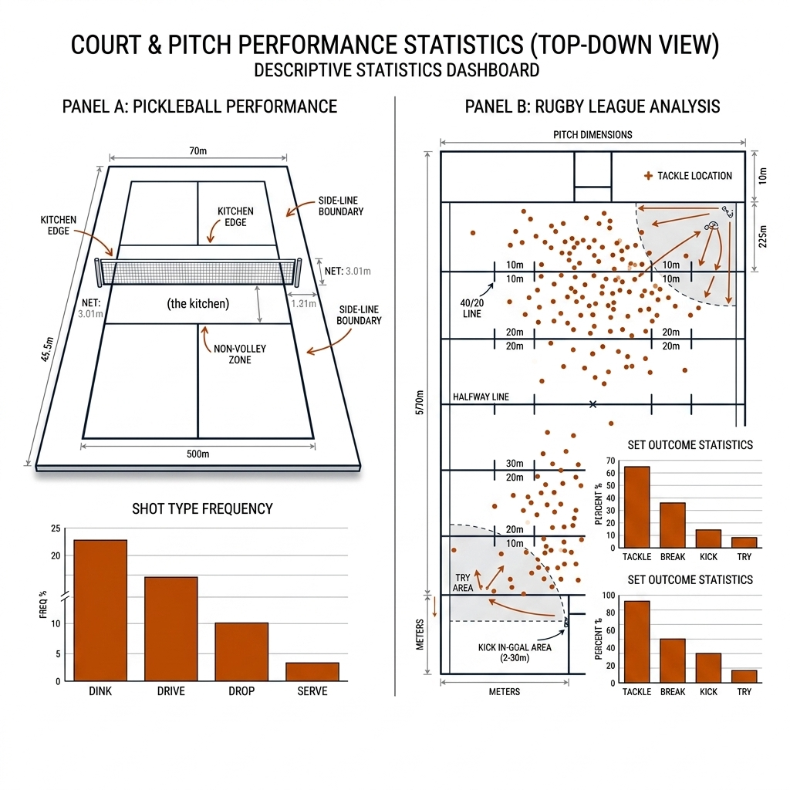
20.2 The n-Trap and the Variance Problem
The canonical mistake: reporting a result without saying how many independent units produced it.
- A 30-second clip of one doubles rally is n = 1 (one match context); it is not n = 900 (frames) or n = 6 (player positions).
- "84.6% receiver accuracy on 3,416 rows" sounds like a large sample. It is one clip with a single train/test split, and the rows are not independent — they come from one continuous rally.
- "Our model beat the baseline" from a single tournament weekend is anecdote, not evidence. You need repeats: several matches, several weeks, or several slices of play.
The practical rule: state the unit of the claim before stating the number. "This model is 84.6% accurate on 3,416 rows from one clip, one split" is honest. "This model is 84.6% accurate" is not.
pickleball: player > match > game > rally > shot > frame
rugby league: team > season > match > set-of-six > play-the-ball > frameA claim about "the tracker" inherits the n of clips. A claim about "this player's third-shot drop" inherits the n of rallies. A claim about a club's right-edge defence inherits the n of matches — roughly 24 per season — even though those matches contain ~300 play-the-balls each. The play-the-balls within a match share the opponent, referee, weather, and game state; they are one draw from the match distribution, not 300.
The variance problem: a 15-rally match is not a 15-sample study. Even at the correct level, units within a cluster are correlated. A player losing 2–8 plays differently than at 8–8; a rugby league team trailing by 18 attacks differently than a team level with ten to play. The honest statement is "we observed 15 correlated draws from this matchup," which carries far less information than 15 independent draws. The design-effect calculation in section 20.4 quantifies how much less.
The sample-size reality. For a proportion, the standard error is approximately √(p(1−p)/n_eff). At n = 24 matches, the standard error is about 0.10; a full NRL season cannot resolve a team-level difference smaller than roughly ±20 percentage points at 95% confidence. At n = 15 rallies, the same arithmetic gives ±25 points. This is why dashboards must show distributions and intervals, not bare season averages.
| n at the claim's unit | What you can honestly say | What you cannot say |
|---|---|---|
| 1 clip / 1 session | "On this footage, under these conditions, we observed X." | Anything about other players, venues, days. |
| 4–10 units | Direction and rough magnitude; screening, not selection. | Rankings; "A beats B" (4/4 sign-test wins give p = 0.125). |
| ~30 units | Confidence intervals behave; medium effects detectable. | Small effects, subgroup claims, calibration finer than ±5 points. |
| 100+ units | Calibration curves, per-subgroup estimates, optional shrinkage. | Rare events under ~1% base rate (needs thousands). |
| 1,000+ rows, one cluster | Same as n = 1 cluster. Rows are the wrong unit. | Any claim beyond the cluster. |
Pickleball: shot distribution on the pklmart corpus. The pklmart Kaggle corpus (300k+ shot records, ~1,000 matches; CC BY-NC-SA [verify]) is a first statistical prior for the sport. The useful dashboard is a conditional distribution: third-shot choices by score, dink location by player position, lob frequency by surface. The n of each cell is the number of rallies satisfying the condition, not the rows in the corpus.
Rugby league: line-break frequency by zone. A typical NRL match has on the order of 5–10 line breaks [verify]. Over 24 rounds a club accumulates 120–180 line breaks, but those are clustered within matches: opponent, injuries, weather, and home/away all move together. A dashboard showing 43% left edge, 31% middle, 26% right edge is a description of the season, not a stable estimate of attacking shape until a second season and a match-level interval are added.
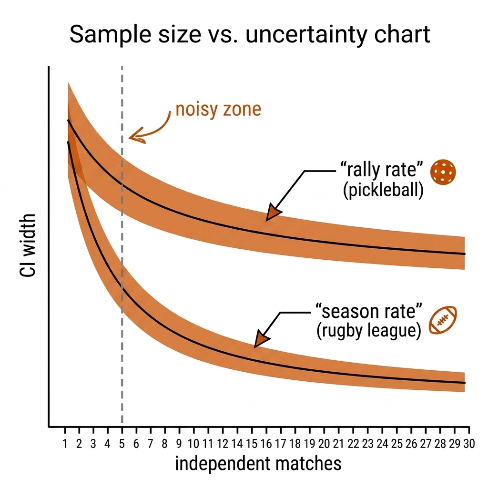
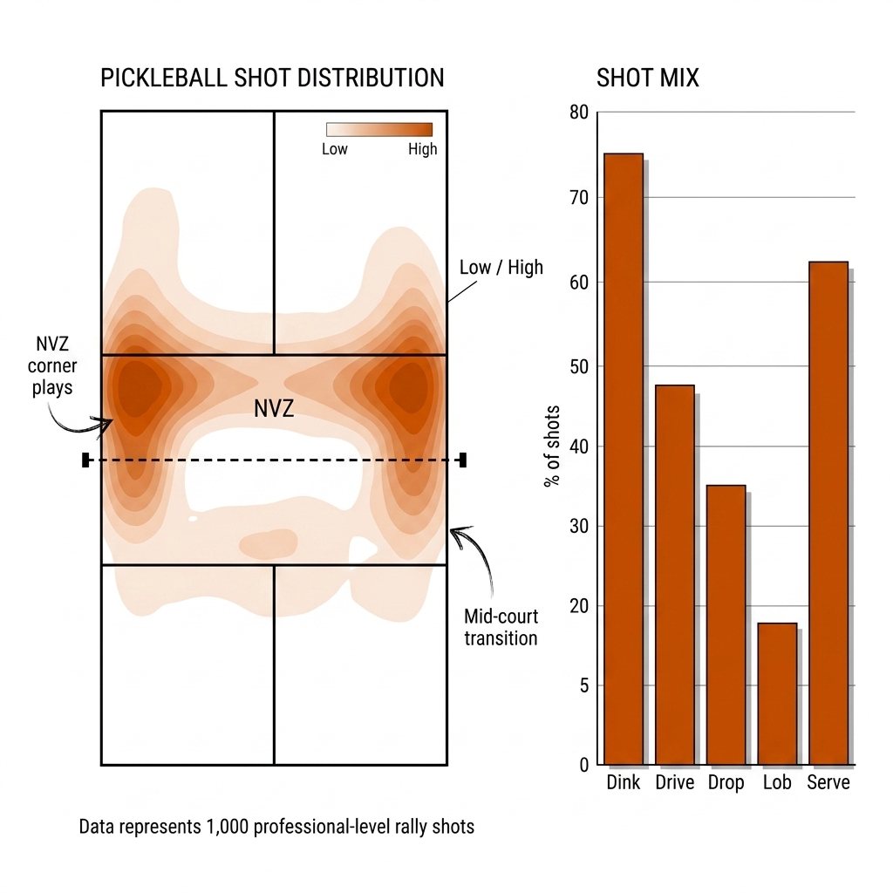
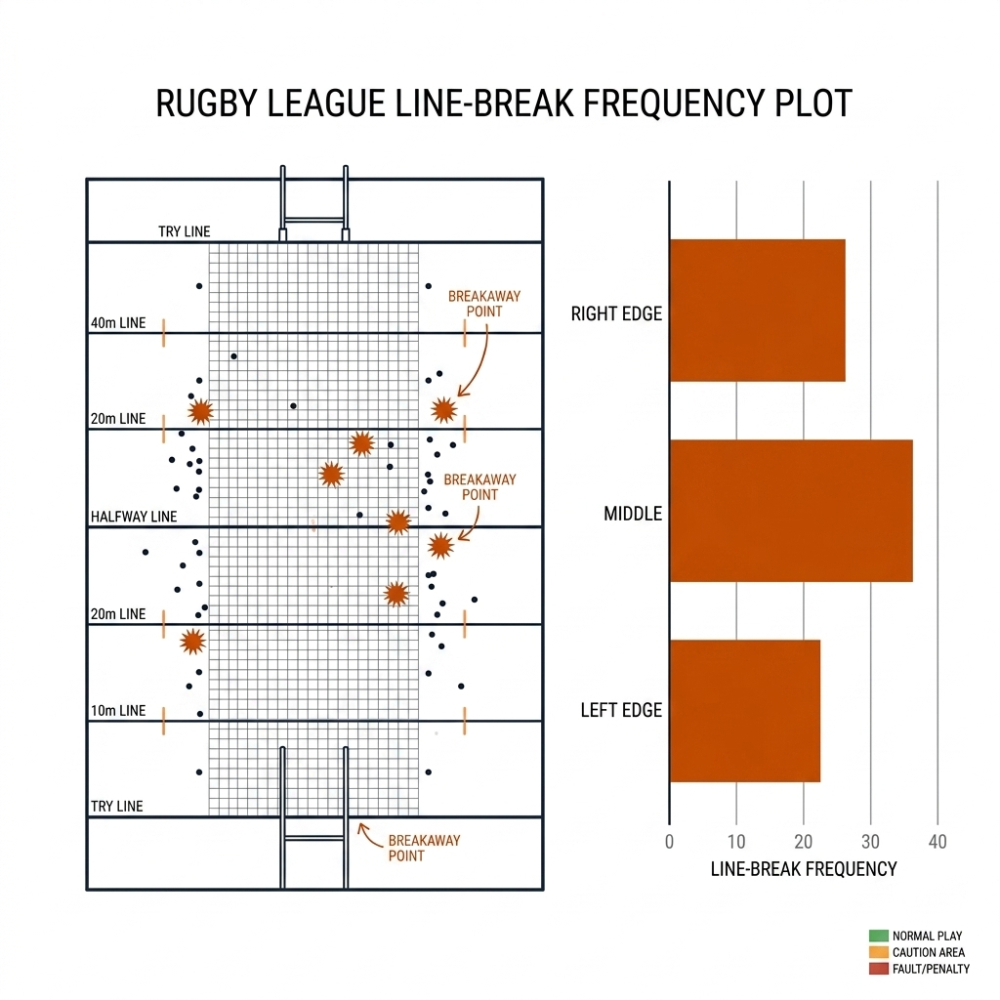
20.3 Uncertainty: Bootstrap Confidence Intervals (W1.4 Lab)
The bootstrap is the workhorse: resample with replacement from your data, recompute the statistic, repeat thousands of times, take the 2.5th and 97.5th percentiles. It requires no distributional assumptions and works on nearly any statistic.
The whole correction is one line of NumPy — resample cluster ids, not rows: rng.choice(rally_ids, size=len(rally_ids), replace=True), then recompute the statistic on the resampled clusters. Everything else about the bootstrap stays the same; only the unit changes.
But the resampling unit must match the unit of the claim. Our lab demonstrates the trap on the book's own E09 tracker bake-off:
| Approach | ByteTrack HOTA | BoT-SORT HOTA |
|---|---|---|
| Point estimate (as originally reported) | 0.642 | 0.815 |
| Bootstrap by play-window (honest unit: 45 windows) | 0.621 (0.607–0.635) | 0.815 (0.803–0.828) |
| Naive frame bootstrap (900 frames, wrong unit) | 0.620 (0.605–0.634) | — |
The naive CI is far too tight: it treats 900 consecutive frames as 900 independent observations. The E09 delta is +0.172 HOTA, but the independent units are 4 players (n = 4), and a sign test gives p = 0.125 — not significant. "BoT-SORT is better" from one clip is a hypothesis, not a measurement. Re-running across 10–20 clips and bootstrapping by clip is the honest path.
The block bootstrap for time-ordered sport
When the unit is sequential — rallies within a pickleball match, sets-of-six within a rugby league match — a naive elementwise bootstrap under-states uncertainty by splitting what should stay together. The fix is a block bootstrap: resample whole rallies, whole sets, or whole clips, not rows. For a 15-rally pickleball match the correct unit is rallies; for a full rugby league match the correct unit is sets-of-six, giving roughly 24 blocks per match. The resulting interval is wider, slower to decay, and honest.
Pickleball and rugby league examples. The E12 classifier reports 84.6% accuracy on 3,416 rows. A row-level bootstrap gives a spuriously tight interval because rows inside a rally move together: a receiver well-positioned at frame t tends to stay well-positioned at frame t+1, so the model is repeatedly correct for the same physical reason. The rally-level bootstrap gives the honest interval [0.779, 0.815]. In rugby league, a set-completion rate over eight rounds is not 192 independent observations (8 matches × 24 sets); a block bootstrap by match can produce a 95% interval twice as wide as the naive binomial interval. Cumming's "new statistics" recommendation — estimate with an interval, avoid a binary significant/not-significant declaration — is the spine of the frequentist half of this chapter.
20.3b Hypothesis Testing: the p < 0.05 Gate
Hypothesis testing is a triage gate, not a truth machine. The p-value answers: "if there were really no difference, how often would I see a result this extreme?" When the answer is rarely (conventionally p < 0.05), the result is worth a closer look. It is not proof that your model is better, and it is not the probability that the null is true. The ASA's 2016 statement is the canonical caution: p-values do not measure effect size or importance.
The book's E22 "Humans Above the Loop" engine uses the p-value exactly this way: 1,000 raw sensor events are passed through a statistical screen, and only 119 alerts are surfaced (88.1% noise suppression). Each alert carries a p-value: a pickleball NVZ foot-fault alert might read p = 0.012, a middle-seam exposure alert p = 0.034. The gate is triage: below 0.05, show the human; above 0.05, suppress. The engine is not claiming the foot fault definitely happened; it is claiming the deviation is unusual enough to be worth human review.
The 20-metrics-on-the-HUD problem. A coaching dashboard might display 20 metrics per match. If you flag any metric crossing p < 0.05, you expect about one false alarm by chance; with 20 metrics the probability of at least one false alarm is 1 − (1 − 0.05)^20 ≈ 0.64. The fix is to pre-specify the metrics that matter, apply Benjamini–Hochberg false-discovery control, or build a small number of composite indicators rather than trawling 20 metrics.
Pickleball and rugby league examples. A player switches paddle and goes 8/10 on third-shot drops; against a 60% historical rate the two-sided binomial p-value is about 0.06 — not significant. A club moves its best second-rower to the left edge and records four line breaks in two matches; n = 2 matches is too few for a rare event. In both cases the honest interim statement is "we do not know yet; collect more independent units."
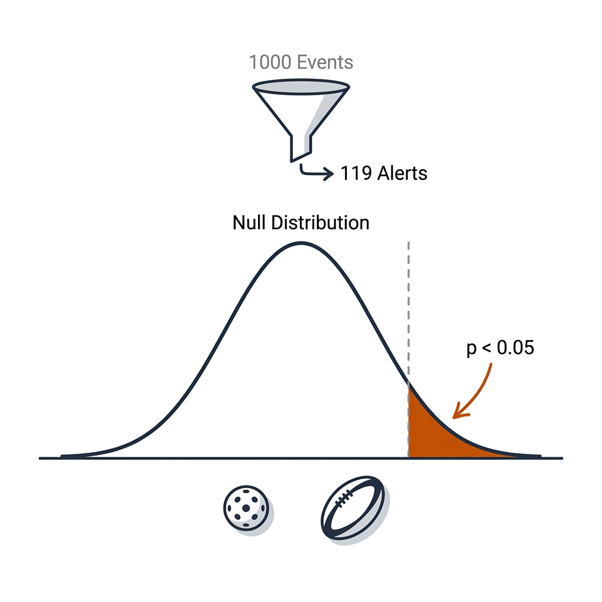
20.3c Regression: the Honest Correlation
Regression is the most abused tool in sport analytics. A coefficient tells you the association; it does not tell you that changing the input causes the output to change. The coach's question is causal: "If I make my player run more, will they get injured less?" The regression answer is only: "Players who run more are currently injured more/less often." The gap is selection bias: players who run more may already be more durable, more fatigued, or in different positions.
The honest example: GPS load and injury. A sports-science department collects GPS load for every session and regresses next-week injury on the previous week's load. The coefficient on high-speed distance may be positive. The honest conclusion is "under our current schedule, high-speed load covaries with injury risk." It is not "cut high-speed running and injuries will fall." The next step is a controlled load-prescription trial or a causal inference design, not a blanket rule.
Pickleball and rugby league examples. A logistic regression of point-win on shot-choice indicators (drive, drop, lob) in the pklmart corpus might show drives are associated with higher win probability; players choose drives in high-leverage moments, so the coefficient does not prove "drive more and win more." A rugby league club that regresses wins on line-break frequency finds a strong positive coefficient, but winning teams also create more situations that produce line breaks. The regression shows association; the causal claim needs a randomized experiment or an instrument.
20.4 Effective Sample Size: the Intraclass Correlation Fix
For the E12 GNN accuracy (84.6% on 3,416 rows), the honest error bar depends on how correlated rows within a rally are. The cluster correction: effective n = n / (1 + (m − 1)·ρ), where m is cluster size and ρ is the intraclass correlation. Our lab shows the same point estimate with different honest error bars:
| ρ (within-rally correlation) | Effective n | 95% CI for 0.846 |
|---|---|---|
| 0.00 (rows independent — false) | 3,416 | 0.834 – 0.858 |
| 0.05 | 990 | 0.824 – 0.868 |
| 0.10 | 579 | 0.817 – 0.875 |
| 0.30 | 218 | 0.798 – 0.894 |
Cross-check: Wilson interval on 3,416 rows = [0.834, 0.858]; naive row bootstrap = [0.784, 0.810]; rally-cluster bootstrap = [0.779, 0.815]. The rally-cluster interval is the honest one and is wider than the naive bootstrap — the design effect at work.
Rugby league translation. A tackle-efficiency metric computed over 300 play-the-balls within a match is not n = 300; it is one match with perhaps 24 sets-of-six as the effective unit. If the within-match correlation is 0.10, the effective n for a single-match metric is closer to 27 than to 300. Aggregate a whole season (24 matches) and the effective n becomes 24, not 7,200. That is why team-level defensive claims need two seasons, not one, to stabilize.
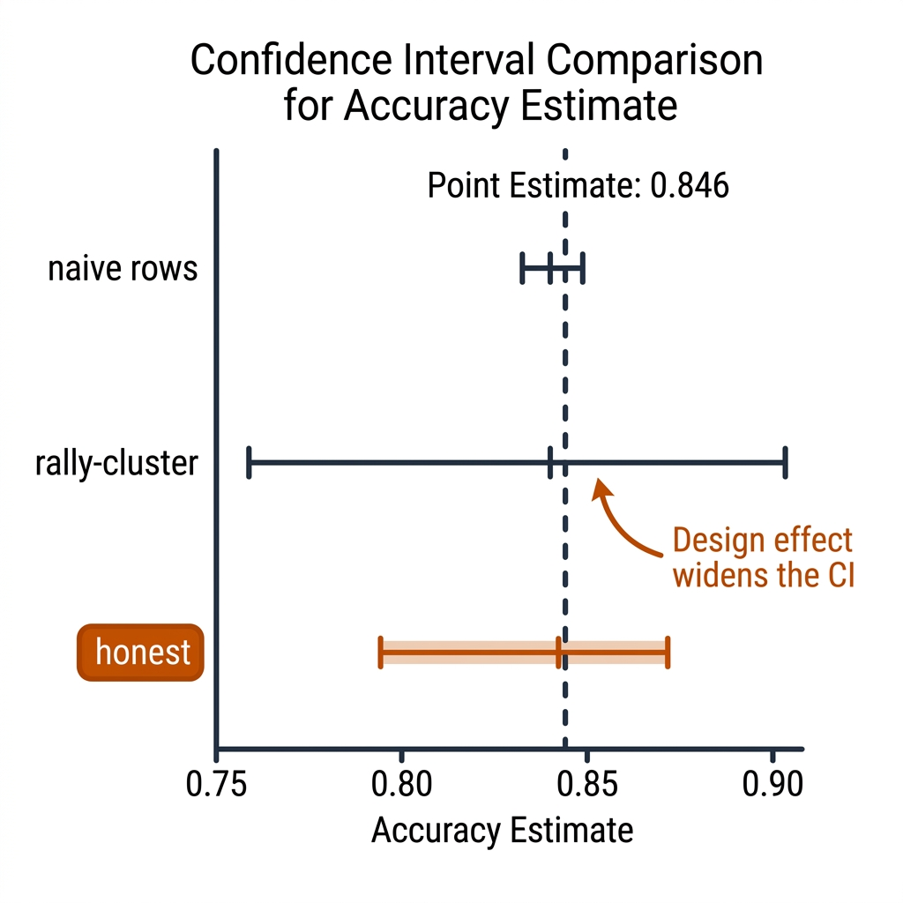
20.5 Baselines: What Does Blind Guess Score?
Accuracy is meaningless without a baseline. In doubles, a receiver predictor that always picks the near player scores 0.50 if there are two candidates, 0.25 if four. Our lab's baseline check:
| Baseline | Score |
|---|---|
| Coin flip (2 receivers) | 0.500 |
| Uniform guess (4 players) | 0.250 |
| Reported E12 GNN | 0.846 (edge = 0.346) |
The strongest baselines are not coin flips; they are trivial heuristics. Per shot-type priors, a large share of pickleball shots go cross-court, so "always predict the cross-court receiver" might score well above 0.50. In rugby league, a model that predicts the next play-the-ball will be a hit-up is right roughly 60–70% of the time simply because most tackle outcomes are hit-ups. Any novel predictor must be compared against the situational baseline, not a 50/50 coin.
20.6 Multiple Comparisons: Try 20 Models, Report the Best?
The lab simulates it exactly. True accuracy 0.70, 20 model variants with noise ±0.08:
- The best of 20 reports 0.862.
- Across 2,000 repeated experiments, the expected maximum of 20 is 0.848.
So "our best model scored 0.862" — when the true accuracy is 0.70 — is the normal consequence of selection, not a discovery. Fixes: hold out a test set you touch exactly once; report all 20 results; use Bonferroni or Benjamini–Hochberg; prefer model families that share pretrained backbones so the comparison is structural. The book's E01–E14 series is a 14-model family — every "best" result must state how many were tried.
The same selection bias appears on a live dashboard. If 20 metrics are tracked and any metric that moves by more than two standard deviations triggers an alert, the false-alarm rate is uncontrolled. A good report chooses 3–5 pre-specified indicators and reports them with correction-aware intervals.
20.7 Shrinkage and Regression to the Mean
The single most expensive mistake in talent evaluation: seeing a player have a great month and concluding they got better. Regression to the mean guarantees that any extreme observation is partly luck, and the further it is from the average, the more of it is. The Bayesian fix is shrinkage: pull every estimate toward the population mean by an amount proportional to the noise in its estimate.
- Beta-binomial for binary rates (serve success, third-drop execution): true rate ≈ (hits + prior_α) / (attempts + prior_α + prior_β). With 5 attempts and a prior centered at 0.5, the estimate stays near 0.5 — and correctly so.
- Hierarchical models for team strength: each team's rating is informed by all other teams' ratings; a team with 4 games is pulled hard toward the league mean, one with 20 games gets far more credit. This is the difference between "NRL ladder after round 5" and a credible rating.
Pickleball and rugby league examples. A junior goes 8/10 on third-shot drops; the raw estimate is 0.80, but a Beta(2, 2) prior gives a posterior mean near 0.71 and a wide interval. A kicker makes 12/15 goals in five rounds (0.80); shrinkage toward the NRL career average near 0.75 [verify] pulls the estimate toward 0.76. After five rounds the estimate is noisy; after twenty rounds the data dominates. Rule of thumb: never state a rate for a player below ~20 attempts without the shrinkage-adjusted band.
20.7b Bayesian Approaches: the Uncertainty Quantification
Bayesian methods are the honest way to handle small data. For a binary rate, the beta-binomial update gives a posterior distribution: a Beta(α, β) prior plus k successes in n trials gives a Beta(α + k, β + n − k) posterior. The posterior mean is the shrunken estimate, and the 95% credible interval is the range in which the parameter lies with 95% posterior probability, given the model and the data.
The strength of the prior is the strength of your accumulated evidence. With 10 attempts, the prior still matters; with 500 attempts, the data dominates. Hierarchical models generalize this: each team or player has their own rate, but all rates are drawn from a league-level distribution. The model learns how much to shrink. This is the engine behind credible team ratings, power rankings, and the EPV models in chapter 22.
Bayesian reports can answer coach-facing questions directly — "What is the probability that the left-edge defence is below the league average?" — using Kruschke's HDI+ROPE framework: act only if the credible interval lies outside a region of practical equivalence.
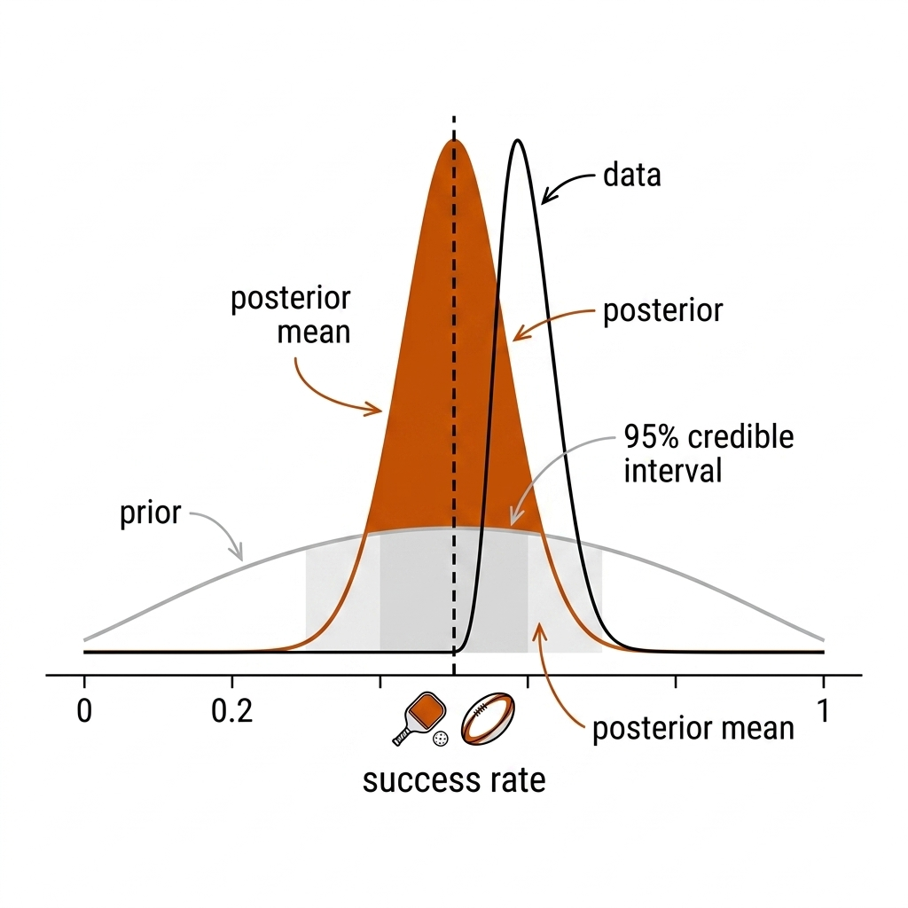
20.8 Calibration: Is Your Probability Model Honest?
A threat model that predicts "0.80 chance the opponent attacks the middle" is useful only if, across all the times it said 0.8, about 80% were attacks. That property is calibration. Metrics:
- Brier score: mean squared error of your probabilities against outcomes (0 = perfect, 0.25 = coin). Lower is better, and it decomposes into calibration + refinement.
- ECE (expected calibration error): bin the predictions, compare mean predicted prob vs empirical frequency; a well-calibrated model has a near-45° reliability line.
- Log loss: penalizes confident mistakes harshly — the metric you should use when a coach will act on the number.
Pickleball and rugby league examples. A receiver predictor that says 0.80 should be right 80% of the time at that level; if it is only 55% right when it says 0.65, a coach reading it as "two-to-one" will be systematically wrong. A tackle-risk model that overestimates injury probability on high-impact tackles will waste medical resources. The fix is a reliability curve and, if needed, temperature scaling.
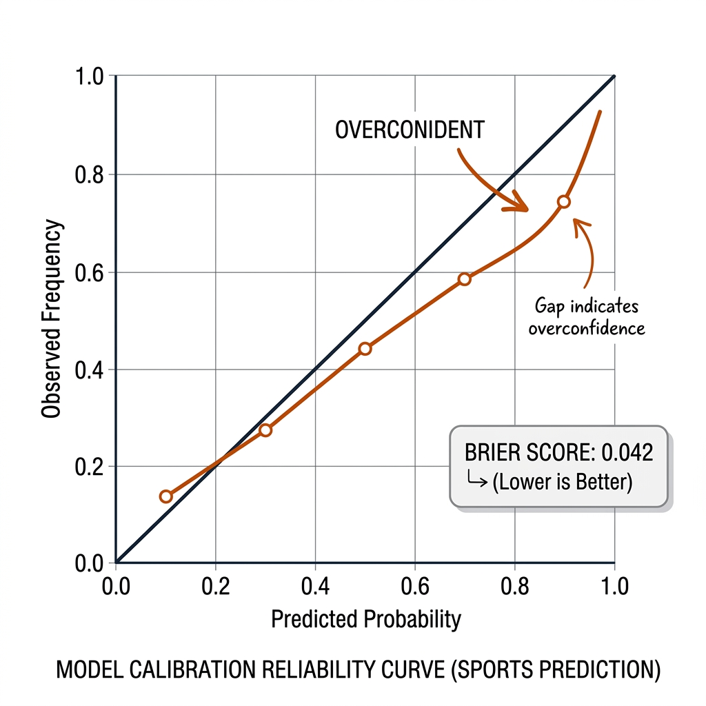
Every probability-emitting component in this book (threat scores, receiver probabilities, expected points in chapter 22, tackle-risk estimates) MUST report a calibration curve with its headline number. An EPV model can have great AUC and be badly miscalibrated; calibration is the discipline that makes a model usable for decision-making rather than just ranking.
20.9 The Honesty Contract
Every quantitative claim in the book carries five fields:
- n — the number of independent units (clips, matches, athletes, windows).
- CI — the uncertainty interval and the unit it was resampled over.
- Baseline — what a trivial heuristic scores on the same data.
- Failure case — the input on which the model breaks.
- Evidence tier — measured / source-backed / concept-transfer / proposed / unknown.
This is what the claims register (chapter 2 / appendix D) enforces mechanically: a claim without an artifact path, a unit statement, and a baseline is not accepted into the manuscript.
20.9b Honest Limits: Correlation Is Not Causation
The most dangerous word in a sport report is "because." A regression shows that teams with more line breaks win more games. A dashboard shows that players with higher third-shot drop success win more rallies. A GPS report shows that higher load is associated with more injuries. None of these are causal statements unless the study was designed to be causal.
The NRL RWA "playing style" claims [verify]. Published analyses of NRL playing style sometimes correlate high running metres, offload counts, or tackle breaks with a label like "tough footy" or "free-flowing attack" and imply that adopting the style causes success. The honest reading is that style labels and outcomes are jointly determined by talent, scoreboard, opposition, and game state. A team behind by 20 takes more risks, produces more offloads, and loses more often; the correlation is real, but the causal arrow is not from style to winning. The specific publication and wording need to be checked before this is cited as a flaw.
Use different verbs for different evidence: "is associated with" for regression or observational data; "predicts" for a model evaluated on held-out data; "causes" only for a randomized experiment, natural experiment, or causal inference design with identifiable assumptions. If your evidence is at the first level, your prose must stay at the first level.
Pickleball and rugby league examples. A club notices that its best doubles pairs have a higher dink-to-drive ratio; the honest statement is that winning pairs also dink more, not that increasing dinking causes winning. A rugby league club finds wins correlate with low penalty counts; the honest statement is association, not that eliminating penalties causes wins without a controlled intervention.
20.10 The Honest-Report Recipe (Copy This)
- State the claim in one sentence: "X improves HOTA by 0.17."
- Name the unit: "on 4 players, 1 clip."
- Compute the honest CI:
bootstrap_ci(values=[per-window scores], stat_fn=mean, n_boot=5000), resampling the unit of the claim. - Compute a baseline: trivial heuristic score on the same data (not just coin-flip).
- Ask the p-hacking question: how many configurations were tried? If >1, apply a correction or state the max.
- If the metric is a probability: report Brier/log-loss + calibration curve.
- If the estimate is a rate: apply shrinkage (beta-binomial) before quoting it.
- Fill the evidence tier: measured / source-backed / concept-transfer / proposed / unknown.
- Ship the block to the claims register (chapter 2, appendix D).
20.10b The 10 Use Cases: Statistical Practice in the Two Sports
The use cases below are the applied bridge from the methods above to the weekly work of a performance department. They follow four quadrants: Q-I Describing Without Lying (01-02), Q-II The Small-n Reality (03-04), Q-III Deciding Under Uncertainty (05-08), and Q-IV Reporting That Survives Scrutiny (09-10). Each case states the practical problem, the mechanism with its math, a figure, both sports, and the payoff — and each carries its evidence label: measured (book experiment), source-backed (paper), or [verify] (practitioner model, not yet established).
Quadrant I: Describing Without Lying (01-02)
UC 01 — Shot Distribution With Conditional n
A coach asks "what does our shot mix look like?" and the dashboard answers with percentages that read as truth. The mechanism is a conditional frequency estimate: partition the corpus by the condition that matters (score, court position, rally length), then report each cell's rate with a Wilson score interval, p̂ with 95% limits from proportion_confint(method='wilson') (source-backed: Cumming 2014; statsmodels docs). The discipline is that the n of each cell is the number of rallies satisfying the condition — not the rows in the corpus. The pklmart Kaggle corpus (300k+ shot records, ~1,000 matches; CC BY-NC-SA [verify]) supplies the prior; the club's own tagged rallies supply the estimate; a cell with n = 9 rallies gets an interval too wide to act on, and the dashboard must say so.
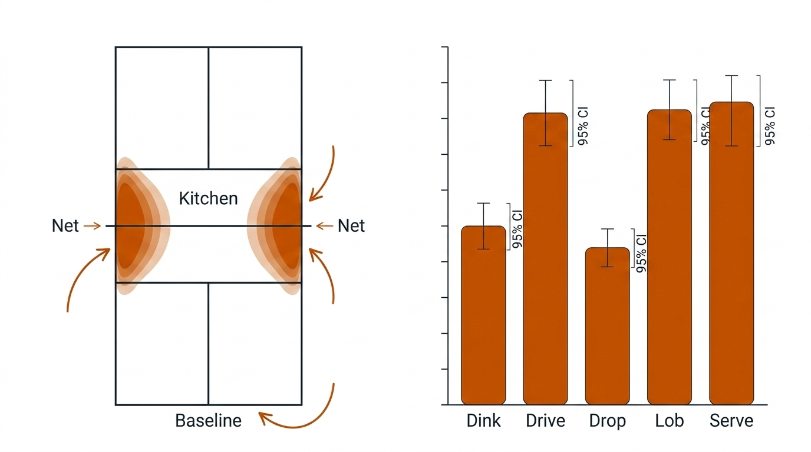
Payoff (coaching): shot-selection review grounded in what the data can actually support — no more rewriting the game plan over a 9-rally cell.
UC 02 — Line-Break Frequency as a Season Estimate
"We break the line left 43% of the time" is a season description dressed as a tactical fact. The mechanism: treat the line-break rate as a proportion estimated from 24 clustered draws (matches), not 7,200 play-the-balls, and attach a match-level cluster-bootstrap interval (resample whole matches: rng.choice(match_ids, replace=True)). A typical NRL match produces on the order of 5-10 line breaks [verify]; over 24 rounds a club accumulates 120-180 of them, but opponent, weather, and game state move together within a match. At n = 24 matches the standard error of a proportion is about √(p(1−p)/24) ≈ 0.10, so a single season resolves differences no finer than roughly ±20 percentage points (derived in 20.2).
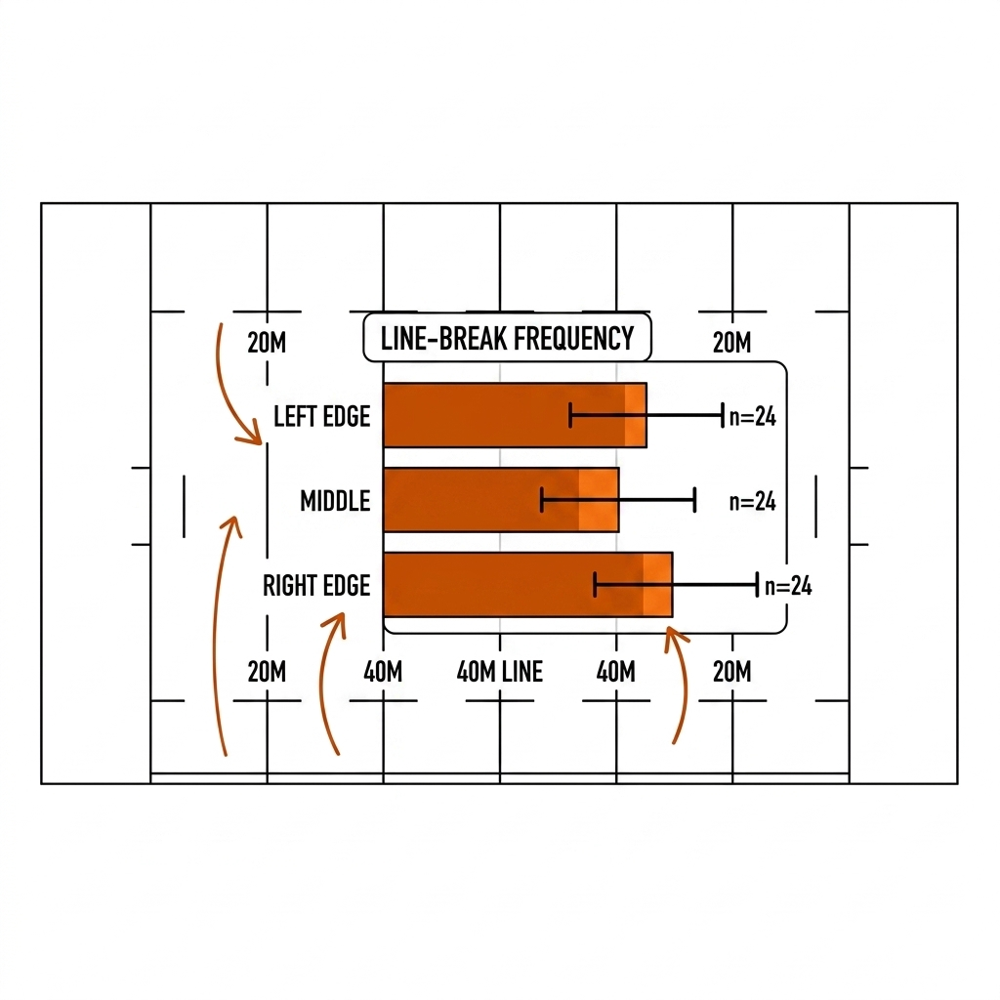
Payoff (tactical): edge-defence investment decided on a two-season interval, not a one-season leaderboard position.
Quadrant II: The Small-n Reality (03-04)
UC 03 — The 15-Rally Match Is Not a 15-Sample Study
A singles match produces about 15 rallies; the post-match report treats them as 15 independent measurements. They are not: a player down 2-8 plays differently than at 8-8, so rallies within a match are correlated draws from one matchup. The mechanism is the design effect from 20.4: n_eff = n / (1 + (m − 1)·ρ), with m the cluster size and ρ the intraclass correlation. At n = 15 even perfectly independent rallies give a proportion interval of roughly ±25 points; with realistic score-state correlation the effective n is smaller still. The honest sentence is "we observed 15 correlated draws from this matchup" — a screening observation, not a measurement of the player.
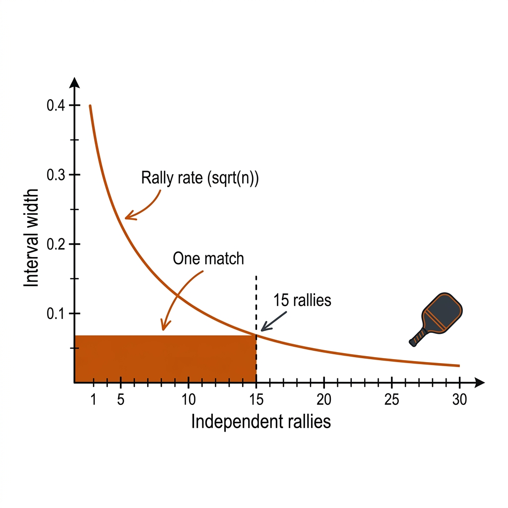
Payoff (coaching): kills the post-match overreaction — the single most expensive habit in a review meeting.
UC 04 — The 24-Round Season Is Still Small
A season feels like a lot of data. At the unit where team claims live — the match — it is 24 draws. The mechanism: model the season rate as a proportion (or count rate) over 24 clustered matches, and apply hierarchical shrinkage toward the league mean for any per-team claim (source-backed: McElreath 2020, multilevel partial pooling). With 24 matches a binomial proportion carries a standard error near 0.10; resolving a true 5-point edge between two clubs needs multiple seasons. This is why the ladder after round 5 is noise, why "best left-edge defence in the league" needs a shrinkage-adjusted band, and why the chapter's rule stands: team-level claims need two seasons to stabilize.
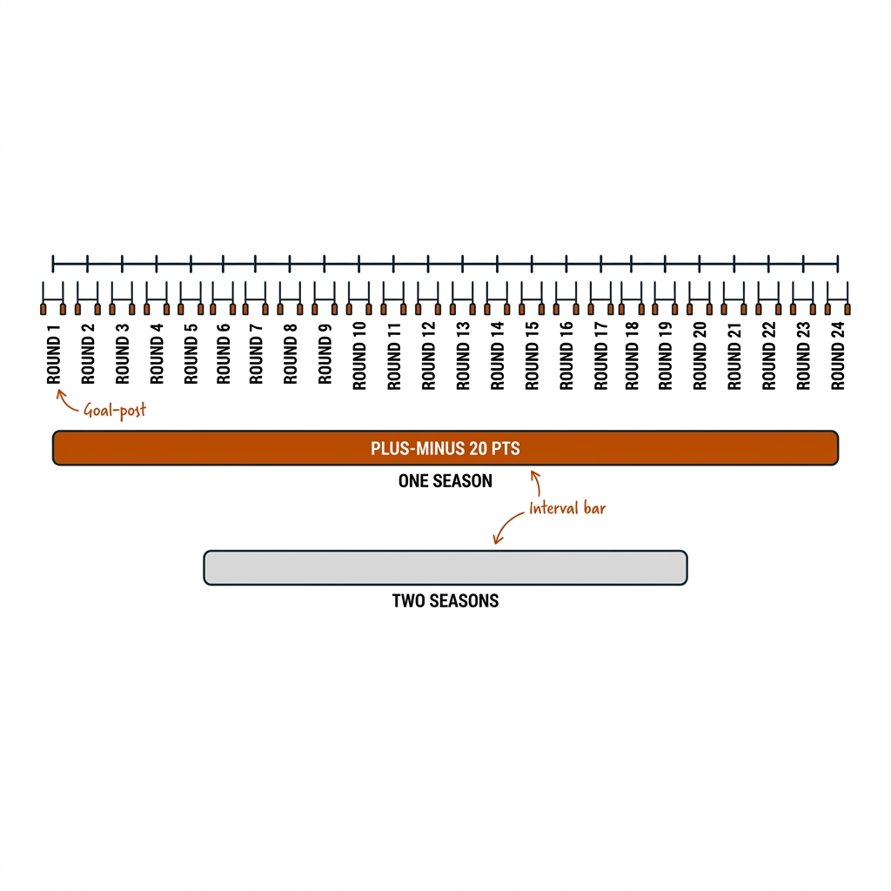
Payoff (recruitment/selection): stops a club buying or cutting a player on one season of noisy team-level numbers.
Quadrant III: Deciding Under Uncertainty (05-08)
UC 05 — The p < 0.05 Triage Gate (E22)
An analyst cannot review 1,000 sensor events a day; a gate must decide what reaches a human. The mechanism is the hypothesis test used as a screen: each event is scored against a null distribution of "normal", and only events in the extreme tail (conventionally p < 0.05) surface as alerts. The E22 "Humans Above the Loop" engine does exactly this — 1,000 raw events in, 119 alerts out, 88.1% noise suppression (measured, E22). The ASA's 2016 statement is the guardrail: the p-value is not the probability the alert is real, and 0.05 is a triage convention, not a law (source-backed: Wasserstein & Lazar 2016). The gate claims "unusual enough to review", never "this happened".
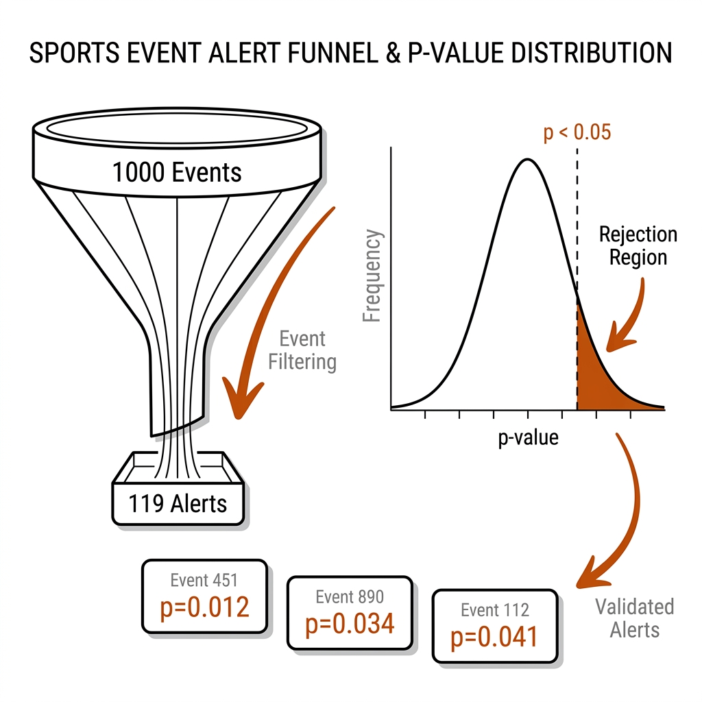
Payoff (officiating/analyst time): an 88.1% reduction in human review load with the statistical claim stated at the right strength.
UC 06 — Load-Injury Regression, Used Honestly
The sports-science question "does high load cause injury?" meets the tool everyone reaches for: regress next-week injury on this-week GPS load, logit P(injury) = β₀ + β₁·(high-speed metres). The honest use stops at association: β₁ > 0 means load and injury covary under the current schedule — durable athletes are selected into higher loads, fatigued ones into lower, and the coefficient absorbs all of it. The mechanism worth teaching is the confound, not the fit: report the odds ratio with its interval, state the selection-bias caveat in the same sentence, and name the design that would earn a causal verb (a randomized load-prescription trial or an explicit causal-inference design). The blanket rule "cut high-speed running" is exactly the move this chapter exists to block.
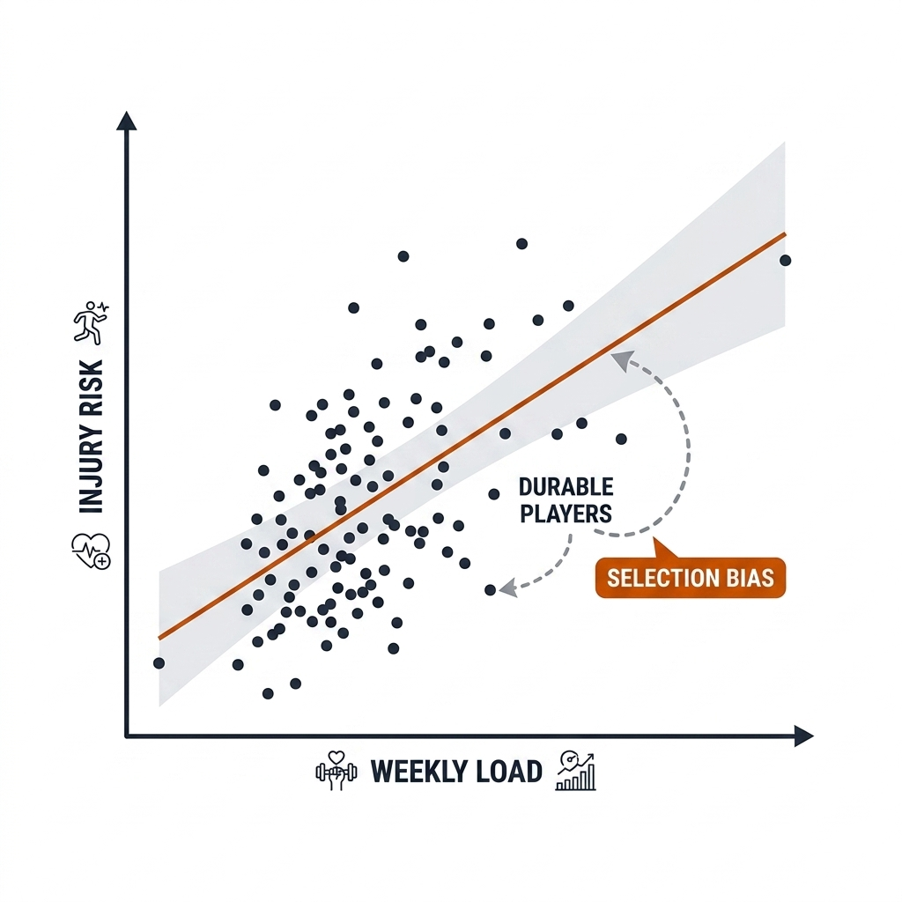
Payoff (injury prevention): load policy argued from an honest association, with the causal claim reserved for the trial that earns it.
UC 07 — Bayesian Updating for Small Samples
A junior trial gives you 10 attempts; a season gives you 300. The beta-binomial update handles both in closed form: a Beta(α, β) prior plus k successes in n trials yields a Beta(α + k, β + n − k) posterior — the posterior mean is the shrunken estimate, and the 95% credible interval is the honest band (source-backed: Kruschke 2015; McElreath 2020). At n = 10 the prior still shapes the answer; at n = 500 the data dominates. The coach-facing question becomes answerable directly: "what is the probability this player's true rate is above the squad mean?" — and Kruschke's HDI+ROPE rule says act only when the interval clears a region of practical equivalence.
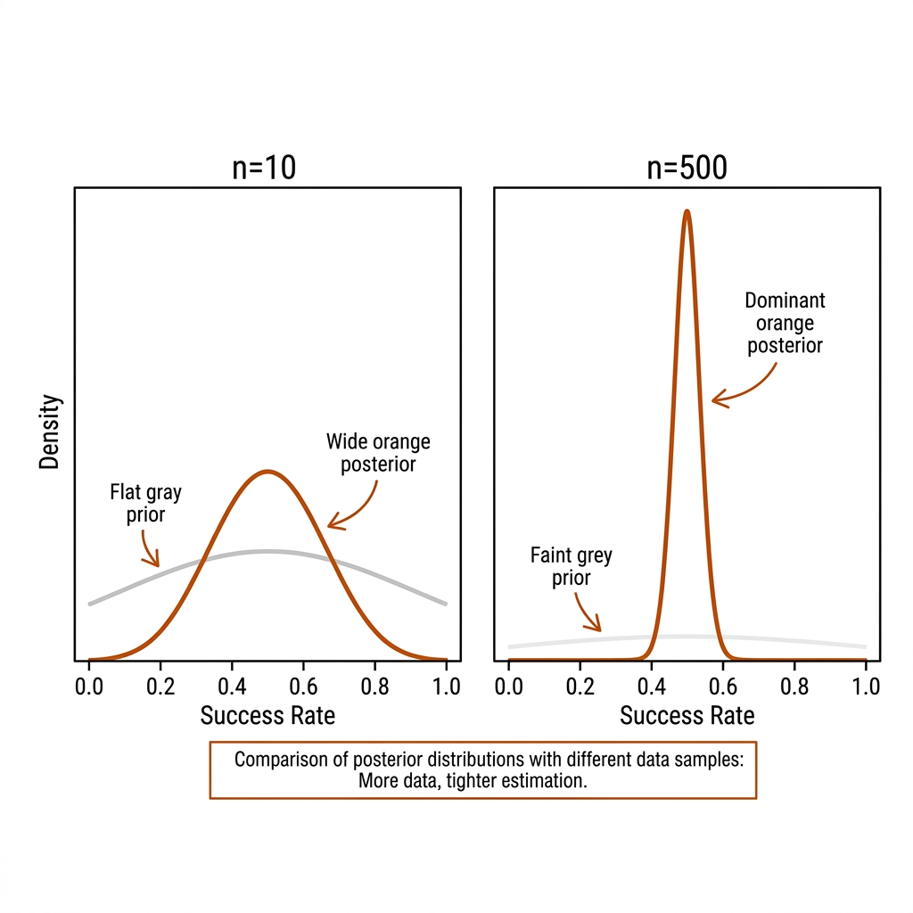
Payoff (talent evaluation): trial decisions made on a shrunken estimate with a band, not on the raw 0.800 that luck inflated.
UC 08 — The 20-Metric HUD and the False-Alarm Budget
The live dashboard shows 20 metrics per match and flags anything crossing p < 0.05. The arithmetic is unforgiving: under the null, the probability of at least one flag is 1 − (1 − 0.05)²⁰ ≈ 0.64 — most match nights produce a false alarm by design. The mechanism has two halves: pre-specify the 3-5 indicators that matter before the season (the practitioner's Bonferroni — fix the protocol, not the p-value), and when many claims really are tested at once, apply Benjamini-Hochberg false-discovery control (source-backed: Benjamini & Hochberg 1995). The same discipline governs model selection: the lab's 20-variant simulation shows the best-of-20 reporting 0.862 when true accuracy is 0.70 (measured, W1.4 lab) — the winner's curse, not a discovery.
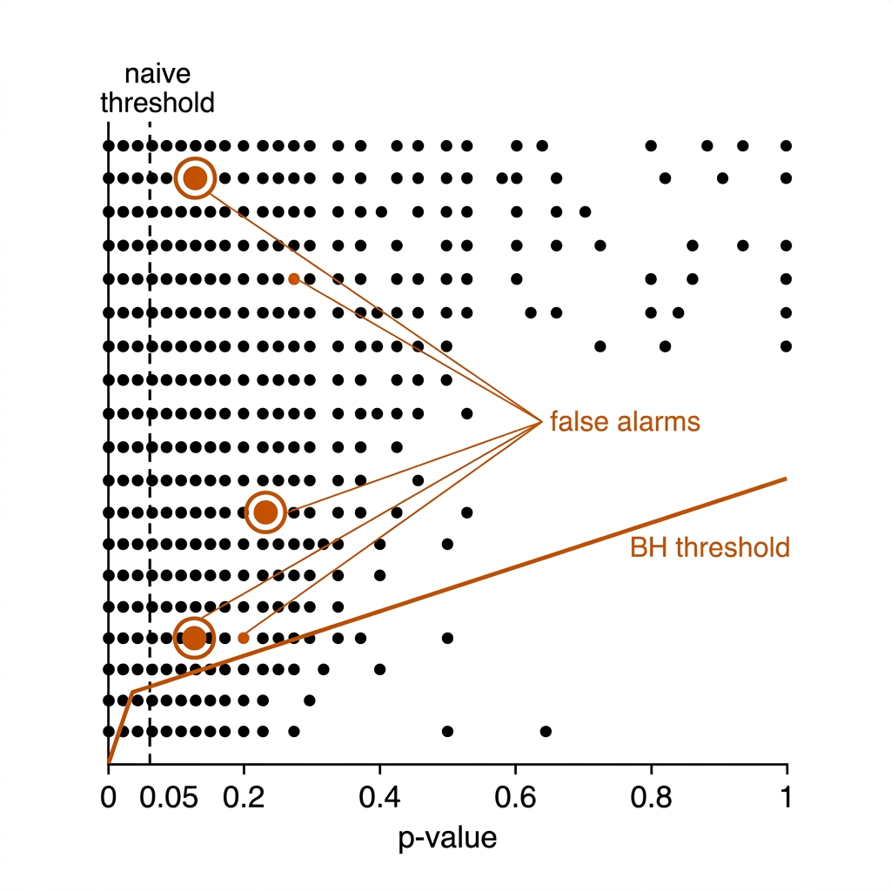
Payoff (analyst credibility): the coach learns that when this dashboard flags something, it is worth a meeting.
Quadrant IV: Reporting That Survives Scrutiny (09-10)
UC 09 — Confidence Intervals in the Report Feed
The chapter 26 narrative pipeline turns numbers into prose for coaches; whatever it says must already carry its uncertainty, because prose strips qualifiers. The mechanism is the honesty contract (20.9) applied at the tile level: every metric ships as estimate + interval + n + baseline, with the interval computed at the claim's unit — Wilson for a proportion on truly independent trials, cluster bootstrap when the trials nest inside rallies, sets, or matches. The worked example is E12: 84.6% reads as [0.834, 0.858] if rows were independent (they are not), [0.779, 0.815] resampled by rally, and "unknown — one clip" at the footage level (measured, W1.4 lab). The tile that ships "0.846" bare is the tile that gets quoted wrong.
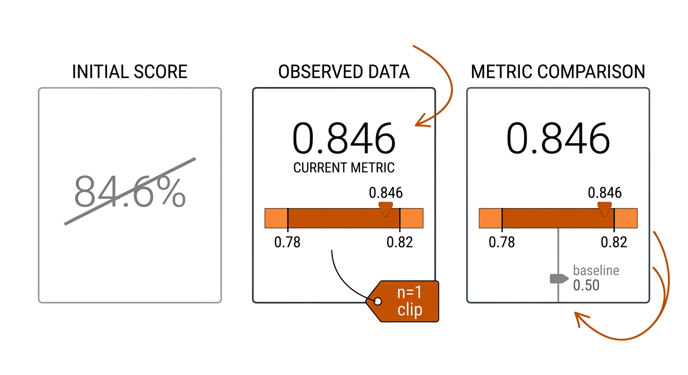
Payoff (coaching communication): the narrative layer (chapter 26) cannot overstate what the number already hedged.
UC 10 — The Correlation-Not-Causation Trap
The most dangerous word in a sport report is "because". The mechanism to teach is the confound: a third variable driving both sides of an association. Teams behind on the scoreboard take more risks, produce more offloads, and lose more often — so offloads correlate with losing without causing it; winning doubles pairs dink more, but winning also produces the rally states where dinking is right. The discipline is verbal: "is associated with" for observational data, "predicts" for a model evaluated on held-out data, "causes" only for a randomized or natural experiment with identifiable assumptions (source-backed: ASA 2016; Gelman & Loken's forking-paths argument [verify primary URL]). The NRL "playing style" genre — correlating running metres or offload counts with a success label — is the canonical offender [verify].
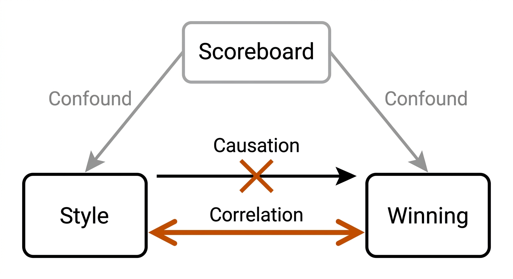
Payoff (tactical): the club stops copying "winning styles" and starts testing interventions — the difference between a fashion cycle and a program.
20.10c The Toolkit, the Skeleton, and the Pipeline
Every use case above runs on five tools, all native on the book's M4 lab:
| Tool | What it does here | Sport use |
|---|---|---|
NumPy (rng.choice) |
Cluster/block bootstrap by resampling ids, not rows | Rally-level CIs for E12; match-level CIs for line-break rates |
statsmodels proportion_confint |
Wilson score intervals for proportions | Shot-mix cells (UC 01); side-out rates |
scipy stats.bootstrap |
Generic interval machinery with an axis/cluster wrapper | Per-clip ΔHOTA intervals for the E09 tracker bake-off |
| scikit-learn calibration | Reliability curves, Brier score, Platt/isotonic fixes | Threat-model and EPV calibration (chapters 22, 28) |
| PyMC + ArviZ | Beta-binomial and hierarchical posteriors, HDI+ROPE | Shrunken player rates (UC 07); team strength priors for chapter 22 |
The runnable skeleton is the one script every use case shares — a cluster bootstrap that takes events with a cluster column and resamples the right unit:
import numpy as np
def cluster_bootstrap(df, cluster_col, stat_fn, n_boot=5000, seed=42):
"""Interval at the claim's unit: resample clusters, never rows."""
rng = np.random.default_rng(seed)
clusters = df[cluster_col].unique()
stats = []
for _ in range(n_boot):
picked = rng.choice(clusters, size=len(clusters), replace=True)
sample = df[df[cluster_col].isin(picked)]
stats.append(stat_fn(sample))
lo, hi = np.percentile(stats, [2.5, 97.5])
return stat_fn(df), lo, hi
# pickleball: cluster_col="rally_id" — accuracy per rally
# rugby league: cluster_col="match_id" — line-break rate per matchWhat this adds to the pipeline. UC 01-02 feed the chapter 28 cockpit: every dashboard tile inherits the interval-and-n contract. UC 05 is the statistical screen inside E22's alert engine and the chapter 19 eventing queue. UC 07's posteriors are the priors for chapter 22's EPV and team-strength models. UC 09 is the input contract for chapter 26's narrative feed. And all ten are enforced mechanically by the chapter 2 claims register: a claim without n, interval, baseline, and evidence tier does not enter the manuscript.
20.11 What I Would Measure Next
- Per-rally accuracy for E12: label 50 rallies, report accuracy by rally, and get the honest CI.
- Calibration curve for the E12 threat model (it already emits probability-like scores — Brier them).
- Bootstrap CI for the tracker bake-off difference, resampled by play-window.
20.12 Sources
- Brier (1950); Cumming (2014) Understanding The New Statistics; Kruschke (2014) Doing Bayesian Data Analysis; McElreath (2020) Statistical Rethinking.
- ASA statement on p-values: Wasserstein & Lazar (2016), The American Statistician 70(2), DOI: 10.1080/00031305.2016.1154108.
- Guo et al. (2017) "On Calibration of Modern Neural Networks", ICML, arXiv: 1706.04599.
- Benjamini & Hochberg (1995) "Controlling the False Discovery Rate", JRSS-B 57(1), DOI: 10.1111/j.2517-6161.1995.tb02031.x.
- Intraclass correlation / cluster-robust SE: standard design-of-experiments material (e.g. Donner & Klar); sign test for paired small-n comparisons.
- Lab:
lab/w1_lab_statistics.py→experiments/c20-stats/outputs/statistics.json.